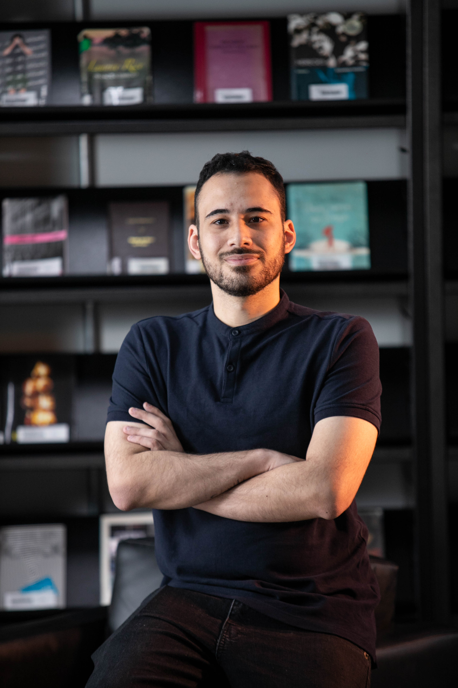
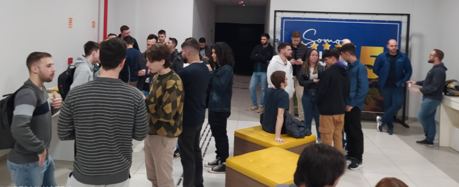

Tecnologia
A tecnologia não é boa nem má e eu acredito que ela pode ser uma ferramenta poderosa para criar soluções para diversos problemas e este deve ser seu propósito tornar a vida das pessoas melhores
Gênio, Bilionário, Playboy, Filantropo. É o que não sou
Desenvolvedor, artista marcial, aspirante a escritor e roteirista e também um entusiasta de movimentos comunitários. Sempre em busca de novos desafios e aprender novas coisas de diversas áreas do conhecimento humano.
O que me chama atenção
A tecnologia não é boa nem má e eu acredito que ela pode ser uma ferramenta poderosa para criar soluções para diversos problemas e este deve ser seu propósito tornar a vida das pessoas melhores
Embora saber o passado seja muito importante, quem vive de passado é museu. A busca por novas ideias sempre me atraiu seja como profissional ou voluntário em grupos de pesquisa científica
From wireframes to polished Figma prototypes. Intuitive, visually compelling interfaces that convert visitors into users and put usability first.
O que sei fazer

Quem sou eu
Eu sou Ítalo Oliveira, faixa preta de Taekwondo e Hapkido, técnico de informática, bacharel em sistemas de informação, desenvolvedor de software a mais de 5 anos, aspirante a escritor e roteirista com um conto já publicado, fui atleta um tempo, depois a realidade do Brasil me fez ir primeiro para a área de publicidade e propaganda, porém achei naquele momento que não era pra mim, então mudei para a área da computação onde além da minha atuação profissional, também participo de comunidades voltadas para profissionais da área de tecnologia.
Gosto muito de explorar minha criatividade de diversas formas, principalmente na escrita, mas gosto muito do mundo do audiovisual, tendo inclusive já feito cursos de cinema nas áreas de montagem e roteiro. Também gosto de conversar com pessoas de culturas e valores diferente, pois acredito que isso nos torna mais compreensíveis e empáticos com o próximo, além de abrir a mente para novas ideias e aumentar nosso repertorio criativo.
O que me motiva
Contar e viver boas historias
"O mundo é cheio de boas histórias, contar histórias faz parte do ser humano, poder viver uma boa história ou ouvir nos faz crescer muito como ser humanos"
Fazer o bem como proposito
"De que adianta fazer tanta coisa se no fim da vida não ajudou ninguém, no fim acredito que o que importa é o que você fez para ajudar as pessoas e o mundo e é nisso que procuro mover as ações que tomo"
Inspirar e ser inspirado
"Os gênios da humanidade inspiraram muitas pessoas e que bom seria se nós como pessoas simples possamos inspirar também, causando impacto positivo na vida de outra pessoa e mostrando que o que é preciso pode ser feito"
O que já fiz

Ajudei a fundar a comunidade que surgiu com o objetivo de promover eventos e outras iniciativas para a comunidade de tecnologia, especificamente a comunidade de desenvolvedores da reigão do Vale do Paranhana, começamos com um evento de 30 pessoas e hoje temos um grupo no whatsapp com mais de 300 pessoas e um evento recorde com 150 pessoas
Coisas que você nao sabe
Entre em contato
Eu estou aberto para conversar e trocar ideias, e se quiser me contratar melhor ainda. Abaixo alguns dados de contato